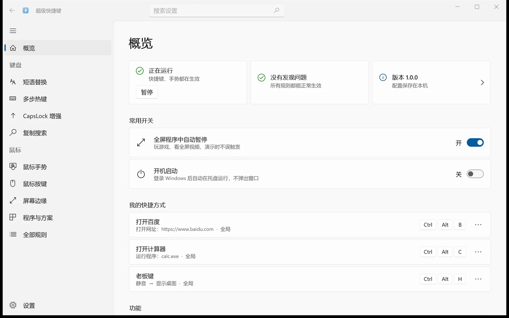

快捷键官网 →
一个组合键，打开常用的网站和软件。
源码已全部完成 · 众筹进行中 · 截止 2027 年 1 月 20 日
从需求分析到发布上线，全程不手写代码，和 AI 一起做出「超级快捷键」： 快捷键、鼠标手势、屏幕边缘……装好就能用，已经在官网免费发布。
源码付款后立即发放，发放后不支持全额退款；众筹没成功只退差价。

3 分钟看懂这门课 · 在 B 站观看「超级快捷键」：一个装好就能用的 Windows 效率工具。下面这些，全部是课程里那个 C++ 核心实现的。
一个组合键，打开常用的网站和软件。
按住右键划一下：后退、刷新、关标签页、最小化。在播放器里自动换成切歌、调音量。
打几个字母，出来一整段：日期、邮箱、常用回复。
鼠标放到屏幕角上滚一下：调音量、调亮度、切歌。
选中文字，连按两次 Ctrl+C，再按 B 就搜百度、按 T 就翻译。
按住 CapsLock，IJKL 变成方向键，手不离主键区。
一个快捷键连着做好几件事：按键、打字、打开软件、窗口操作。
这些功能现在就能用 → 去官网免费下载
不手写代码，指挥 AI 把软件做出来。按这个项目真实的开发过程，一步一步来。
所有功能都在 C++ 核心里；界面可以换。这是一个软件，不是几个软件。
所有版本的核心都是同一个：C++ 写的，用 Win32 API 监听键盘鼠标，实现全部功能；界面只负责显示和设置。
| 版本 | 界面技术 | 语言 | 和核心怎么连 | 特点 | 档位 |
|---|---|---|---|---|---|
| Win32 版 | Win32 API 系统控件 | C++ | 和核心编在同一个程序里，直接调用 | 单个文件约 3 MB，不用装任何运行库 | 标准版 |
| WinUI 版 | WinUI 3（Windows App SDK） | C# / .NET | 命名管道 + JSON | Windows 11 设置风格，支持深色 | 标准版 |
| WPF 版 | WPF | C# / .NET | 命名管道 + JSON | 最成熟的 .NET 桌面技术 | 完整版 |
| Electron 版 | Electron + React + Fluent UI | TypeScript | 命名管道 + JSON | 网页技术做桌面软件 | 完整版 |
| Tauri 版 | Tauri 2 + 同一套 React 界面 | TypeScript + Rust | 命名管道 + JSON | 用系统自带的 WebView2，体积比 Electron 小 | 完整版 |
| Direct2D 版 | Direct2D 自绘 | C++ | 和核心编在同一个程序里 | 每个控件自己画 | 试验包 |
| aardio 版 | aardio 原生窗口 | aardio | 命名管道 + JSON | 国产语言，小巧 | 试验包 |
核心是同一个，区别只在包含几套界面。每个项目都是完整的：源码、测试、文档、打包脚本，拿到就能编译、打出安装包。
¥298
核心 + 两套界面，完整走一遍开发流程
¥598
标准版全部内容，再加三套界面
源码付款后立即发放，发放后不支持全额退款；众筹没成功只退差价。
完整版 +¥150
按现状提供源码，不保证完整可用，以后也不再更新，适合想研究不同界面技术的人。只能和完整版一起购买，需要的话请联系客服了解或购买。
整个项目长什么样。点开看每个目录是什么，标签表示在哪个档位里。
superkey/工作目录SuperKey/软件源码superkey/C++ 核心 + Win32 界面：快捷键与手势引擎、配置、托盘，给其他界面用的管道服务标准版superkey-win32/Win32 版发布：核心 + 设置窗口，单个 exe 就能运行标准版superkey-client/.NET 公共客户端库：.NET 界面连接核心用标准版superkey-winui/WinUI 3 界面：Windows 11 设置风格标准版design/设计规范：图标、颜色、尺寸，人或 AI 都能照着还原标准版docs/需求、计划、打包与发布文档标准版superkey-wpf/WPF 界面（.NET）完整版superkey-electron/Electron 界面（TypeScript、React）完整版superkey-tauri/Tauri 界面：同一套 React 界面，外壳是 Rust完整版superkey-aardio/aardio 界面（开发到一半，按现状提供）试验包superkey-d2d/Direct2D 自绘界面（功能完整，未经实际使用，按现状提供）试验包tools/各项目共用的打包脚本、安装包模板标准版superkeyapp.github.io/软件官网（公开，任何人都能看）公开keycast/KeyCast 按键显示：录演示视频时把按键显示在屏幕上完整版不会桌面开发、不会 C++，也可以学。整个项目是 AI 写的，课程教的是怎么指挥 AI，而不是逐行写代码。有一定编程基础更好：能看懂报错、会用命令行，和 AI 配合起来会更顺。
不只是写个小 Demo，而是做到能发布、有人用。
键盘鼠标钩子、托盘、进程通信、界面技术，一次看全。
架构、测试、文档、打包、官网，商业项目的完整样子。
需要准备：一台 Windows 电脑；Claude Code 桌面版（课程全程使用，推荐）。
作者介绍待定
能。软件在官网免费下载，课程教的就是怎么把它做出来。去官网下载
源码已经全部做好，付款后马上拿到。众筹的只是一套额外的 AI 编程视频：达到 20 人就录，没达到就不录，源码照样是你的。
源码就是官网上发布的那个软件，整体是完善的，可能还有一些小问题，发现了可以在微信群里反馈。建议先在官网免费下载体验。
能。整个项目是 AI 写的，课程教的是怎么指挥 AI 做出软件，而不是逐行写代码。有一定编程基础更好：能看懂报错、会用命令行，和 AI 配合起来会更顺。
课程全程用 Claude Code 桌面版，推荐你也用它，跟着课程操作最顺。也可以用 Codex 或 Trae。
不推荐豆包、元宝这类聊天助手：它们只能在对话框里回答问题，不能直接读写整个项目、运行编译和测试。做一个完整的软件，需要 AI 能直接操作项目。
不教写代码。视频不教写代码，而是用 Vibe Coding 的方式，从需求分析、验证功能可行，到做出两个成熟的核心功能，最后制作宣传网站、写一些辅助工具（比如录演示视频用的按键显示），完整走一遍。具体步骤见上面“这门课讲什么”。
不是。视频里把需求分析、验证、编写、重构、拆出核心、对接 WinUI、打包发布、宣传网站和辅助工具的完整流程走一遍；不是每个功能都重做一遍，其余功能讲解思路，并提供完整源码。
核心是同一个。标准版包含 Win32 和 WinUI 两套界面；完整版再加 WPF、Electron、Tauri 三套界面。每个项目都带自己的打包脚本，拿到就能打出安装包。
Direct2D 自绘界面和 aardio 界面两个试验项目，没有做完，也不再继续做。按现状提供源码，不保证完整可用，以后不更新，适合想研究不同界面技术的人。只能和完整版一起买，加 ¥150，需要的话请联系客服了解或购买。
两个档位都有微信答疑群。
整个项目是用 Vibe Coding 的方式开发的，代码都是 AI 写的。所以遇到具体的代码问题，比如报错、想加功能、想改界面，推荐直接交给 AI 解决：把报错信息和你的需求发给 AI，它比人更快、更专业。这也正是这门课要教的方法。
答疑群主要交流思路和方法：怎么给 AI 描述需求、AI 卡住了怎么办、工具怎么用。
不录视频课程，改为只出售源码并降价（标准版降到 ¥199）。你已经拿到的源码照常保留，并退还差价。
源码是付款后立即发放的，发放后不支持全额退款；众筹没成功时退还差价（见上一条）。建议先在官网免费下载软件体验，再决定是否参与。
源码付款后立即提供，同时加入微信群。视频课程在众筹达到 20 人后开始录制，录好后在课程网站上观看。
待定
还有问题？联系客服微信
有任何问题，或者想先聊聊再决定，都可以加客服微信。
微信号：待定
在微信里打开本页时，长按二维码即可识别添加；
也可以复制微信号，到微信里搜索添加。